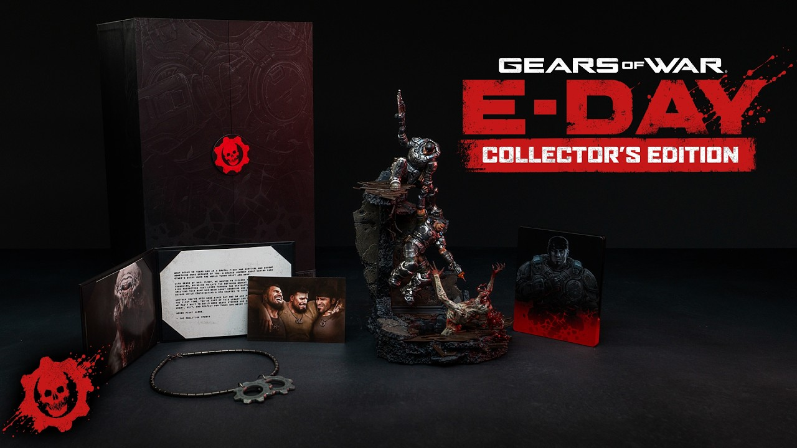

Gears of War: E-Day had one of those weeks where everything lands at once. First real gameplay. Release date. A $299 Collector's Edition. And the confirmation that, no, it is not coming to PlayStation. Xbox opened their 2026 Games Showcase with it, put their CEO on stage specifically to talk about exclusivity, then ran a dedicated E-Day Direct right after the main show. A lot happened in a short window. Here is the full breakdown.
Where It All Started: The 2024 Announcement Teaser
Nobody was expecting a prequel. After Gears 5, most people assumed the next game would just continue that story. The Coalition went the opposite direction entirely.
The announcement teaser from Xbox Games Showcase 2024 was in-engine footage, not gameplay. It was bleak. A young Marcus Fenix is getting beaten badly by a Locust drone in some building. He is not winning. He is getting stamped on, thrown around, nearly finished. He finally gets a hit in with a TV set, grabs his Lancer, and just about survives. Then Dom's hand reaches out. The city of Kalona is burning in the background.
The song choice was deliberate. They used the Gary Jules version of Mad World by Tears for Fears. If you know Gears history, that same song appeared in the original marketing campaign back in 2006. The slower, more stripped-down version they picked for this teaser made the whole thing feel less like a hype reel and more like a eulogy for the world that is about to end.
Creative Director Matt Searcy talked about the decision to go back to this moment: "We realized that a lot of the words we use to describe the franchise were what our fans also use, phrases like brotherhood, brutality, pathos, awe. Why E-Day? That is the moment it all comes together. It is the heart of the Gears universe. Everything that happens is shaped by this day."
On the 18th anniversary of the original Gears of War, John DiMaggio and Carlos Ferro were confirmed as returning to voice Marcus and Dom. That detail alone told you The Coalition was taking this seriously.
The Gameplay Trailer: What Was Actually Shown
The Xbox Games Showcase 2026 opened with Gears of War: E-Day. Not buried in the middle. Not saved for a finale. First. That is a statement, and after watching the trailer, it is a defensible one.
The demo runs about seven minutes. It covers several locations across the city of Kalona on Emergence Day itself. The first thing that catches you off guard: Marcus is in civilian clothes. No COG armor, no iconic look. Just a soldier in normal gear who picks up a weapon because the world outside is falling apart. It is jarring if you have spent time with the series, and that is probably the point. E-Day happens before any of the COG's full mobilization. These characters have not become who we know yet.
The locations shown include panicked city streets and what appears to be an abandoned grocery store. Civilians are being torn apart as the Locust surface for the first time. The tone of what was shown is noticeably darker than recent Gears games. There are stretches that feel closer to survival horror than a shooter. For a story about the single worst day in human history on the planet Sera, that tracks.
The Locust have been redesigned. Studio Art Director Aryan Hanbeck discussed this back at the 2024 reveal: "We transformed the drone into something fearsome, physically intimidating, and utterly brutal. Getting the drone right was crucial. Everything else with the Locust we are scaling up from there." You can see that intent in the gameplay footage. These enemies look genuinely dangerous in a way they stopped feeling after years of sequels reduced them to background threats.
The core mechanics are still recognizably Gears. Cover shooting, the Lancer, the chainsaw. But the additions are not cosmetic. Marcus can now slide. There is more verticality than the series has had before: you can jump, get into buildings from multiple angles, and shoot down on enemies from above. The grenade launcher has a detonation timing mechanic. The Lancer chainsaw gives you a proper payoff when you finally cut all the way through an enemy. That last one is exactly the kind of tactile detail Gears has always been good at.
One of the more interesting design decisions involves how much you explore. The Coalition says how far you venture through the city determines how many civilians you reach in time. Moving into side streets and off the main route leads to environmental story discoveries. They have put effort into showing that nobody in Kalona was prepared for any of this: dinners left on tables, TVs still running in empty rooms. The environment is meant to read as a normal day that got interrupted beyond recovery.
On the technical side, the game runs at 4K with native HDR10 rendering, hardware-based 60fps ray tracing in the campaign, and 120fps in multiplayer. The Unreal Engine 5 work is visible throughout and looks like a genuine step up.
The Story: Bravo Squad and New Characters
The full campaign follows Bravo Squad. Marcus and Dom are the familiar faces, but two new characters join them: Carter, a seasoned Gear, and Lucas, a fresh cadet who has not seen anything like this before. The four of them move through Emergence Day together. The tension between them is part of the story.
The themes The Coalition described are burden, loss, and loyalty. Given what E-Day means in the Gears timeline and what the series eventually does to the people involved, those are not random choices. Bravo Squad's story also pulls in characters from other corners of the Gears fiction, including the novels. Gill Gettner and Tai Kaliso both appear.
The team talked about pushing character expressiveness further than anything in previous games. Facial capture has been upgraded, and the specific example they gave is that Marcus has more movement in his eyelids in this game than in his entire original character model. That sounds like an odd thing to bring up, but it matters when you watch the quieter story moments. More expressive faces change how those scenes land. The 2006 Marcus was not built for that kind of work.
The E-Day Direct also confirmed four-player online co-op with all four characters available from the start, and two-player splitscreen. The Horde mode has been reworked into Horde Siege, built for larger maps and more players, with a class system: Assault, Marksman, Medic, or Breacher. The versus PvP side has updated 4v4 modes.
The Collector's Edition

A $299 Collector's Edition was announced alongside the gameplay reveal. The centerpiece is a 15-inch diorama statue of Marcus and Dom in combat with a Locust. The image shows the level of detail they went for: Marcus mid-strike, Dom in the fight, a Locust figure twisted underneath on a rubble base with red lighting throughout. Three AAA batteries required, not included.
The rest of the physical package includes a 1:1 scale replica of Carlos Santiago's COG tags in metal zinc alloy and brass, a lithograph, an in-game photo, a thank-you note from The Coalition, and a custom SteelBook case designed by Luke Preece. Xbox buyers get a physical disc. Steam buyers get a digital code.
The Premium Edition digital upgrade is also included: up to 5 days early access (starting October 1 instead of October 6), the Bravo Squad Signature Weapon Pack, 1,000 Iron in-game currency, and five Seasonal Customization Packs with the Emergence Pack available at launch.
Three hundred dollars is a serious ask before a game has been in anyone's hands. The statue is the main justification. A piece like that from a third-party collectible retailer would realistically run at that price or higher on its own. If you are already a Gears collector, the math is defensible. If you are not, this is not the edition to start with.
Xbox Console Exclusive: No PS5
After the gameplay trailer, Xbox CEO Asha Sharma walked on stage and confirmed Gears of War: E-Day will not release on PlayStation 5. Xbox Series X/S and PC only.
A lot of people assumed the opposite. Xbox has been moving first-party games to PS5 for a couple of years now. Gears of War: Reloaded, the remaster of the first game, came to PS5. The trajectory seemed to point in one direction, and E-Day appeared to be going the same way.
It is not a blanket reversal. At the same showcase, Halo Campaign Evolved, Fable, State of Decay 3, and Minecraft Dungeons II were all confirmed for PlayStation. Clockwork Revolution is also staying Xbox exclusive. So the picture is patchy, and there is no obvious clean strategy visible from the outside. Xbox seems to be making these calls game by game rather than as a platform policy, which is genuinely hard to predict.
Gears staying exclusive is a statement that Xbox still wants marquee franchises that do not appear on PlayStation. Whether it moves hardware in any meaningful way is a different question. The Xbox 360 era, when Gears was selling millions and platform exclusivity mattered enormously, is not coming back. But the game looks good enough that the exclusivity decision might matter less than it would have in a weaker release.
Release Date and Everything Else
Gears of War: E-Day launches October 6, 2026, on Xbox Series X/S and PC. It is on Xbox Game Pass on day one, which means if you subscribe, the Collector's Edition decision is the only real spending question in front of you.
Two years since the announcement teaser, and The Coalition has shown something that looks like it takes the weight of E-Day seriously. Darker tone, redesigned enemies, new characters who have to earn their place next to Marcus and Dom, and technical performance that backs up the ambition. The story of the worst day in Sera's history has never been shown in full in a Gears game before. October is not far off.